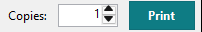
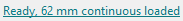

Printing
The picture on the canvas is the print: QL Label Maker turns the label into the printer's black dots and sends exactly these dots.
-
Copies and Print
Set the number of labels under Copies, then click Print. The label prints on the printer shown under Printer at the top.

-
The loaded roll
Before printing, QL Label Maker asks the printer for the loaded roll: always on USB and on the network, and a shared printer when the printer status service runs on the PC it is plugged into. It shows first:
- an error on the printer,
- a roll that doesn't fit the label (the printer would otherwise stop with a red light),
- a printer set to "Use Printer Offline"; QL Label Maker offers to use it online again.
If a code on the label has an error, QL Label Maker asks first too, see Barcodes and QR codes.
The status bar at the bottom shows what is loaded. Clicking it asks the printer again, and so does Printer > Check the loaded roll.

Printer > Printer status tells you more about the printer. Printer > Notify me about printer errors shows a Windows notification when a QL printer stops (more), and Printer > Printer setup adds a network or shared QL printer (Printer setup).
Tip: that's why labels are best printed with QL Label Maker. If a label doesn't fit the roll, it says so before sending it, so the printer doesn't get stuck in its error state (which only opening and closing the roll cover clears). That's especially handy when the printer is on the network or at another PC. Word and other programs print too, but without this check.
-
300 × 600 dpi
Twice the dots along the label: sharper text, slower printing. Turn it on under Resolution on the right while nothing is selected, or with Printer > 300 × 600 dpi (sharper, slower). A new label starts with the printer's setting.
-
What doesn't print
- hatched areas: the printer can't print there,
- parts of objects beyond the label,
- the light margin around a selected code (the quiet zone).